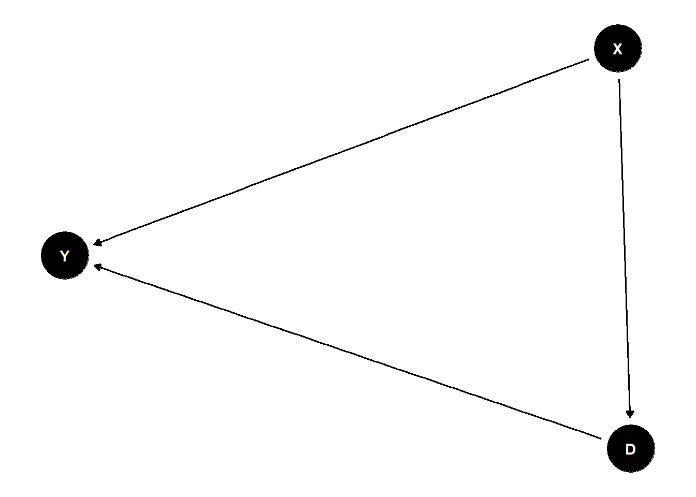
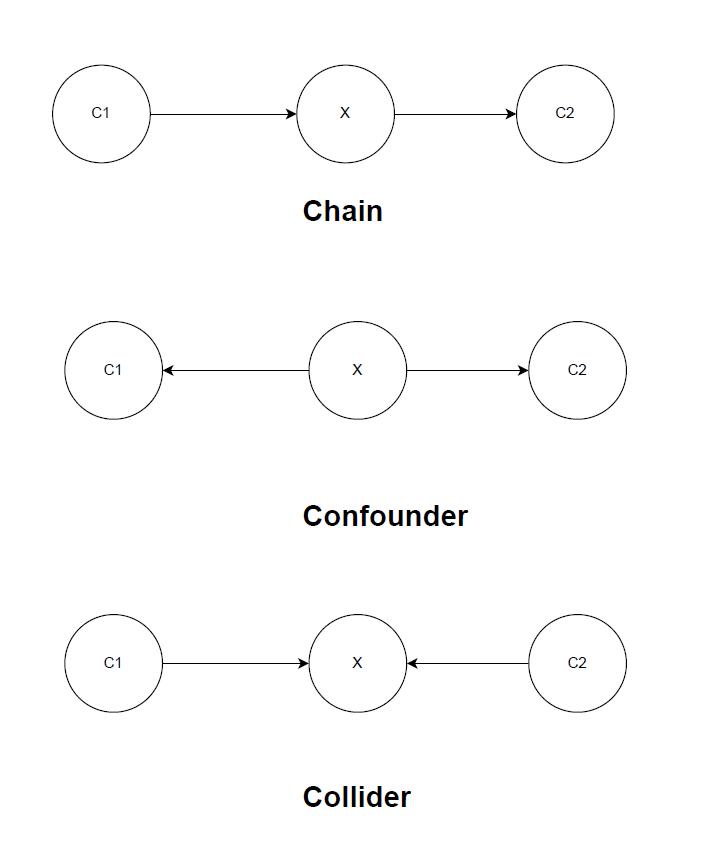
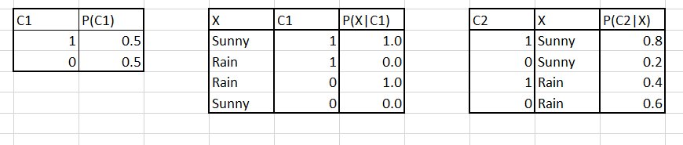
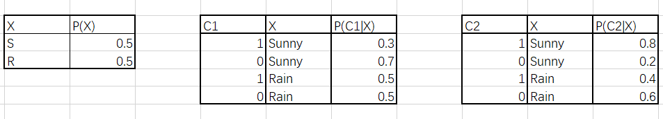
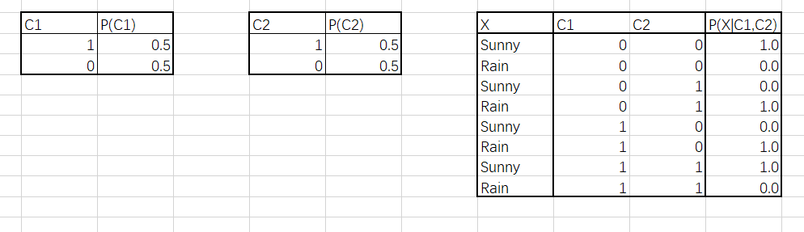
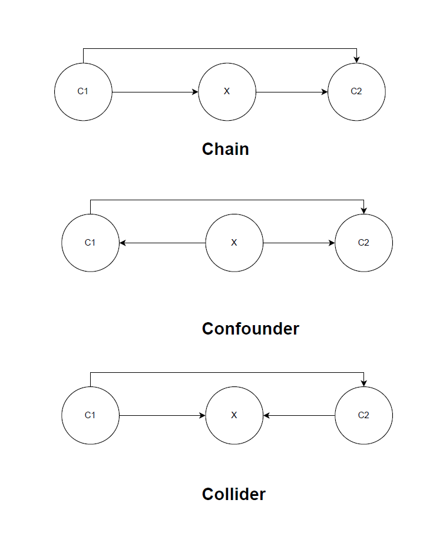
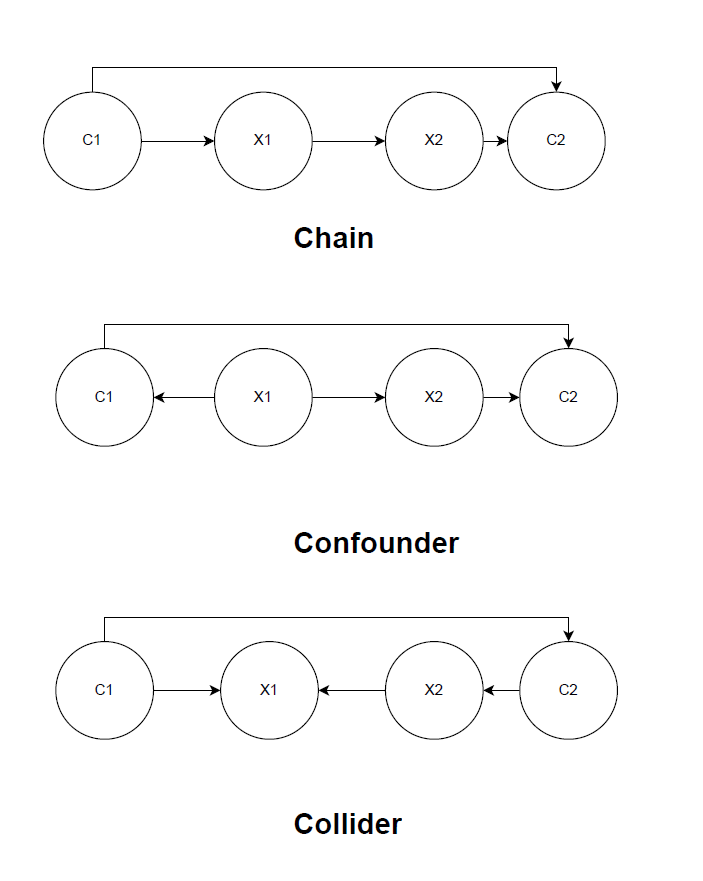
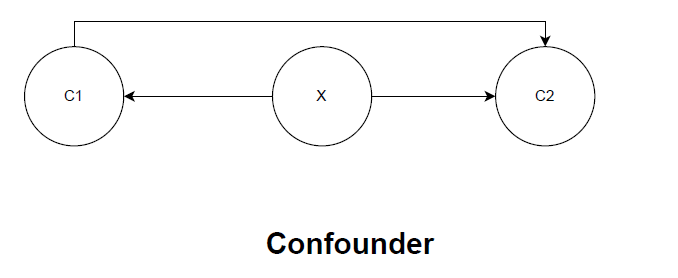
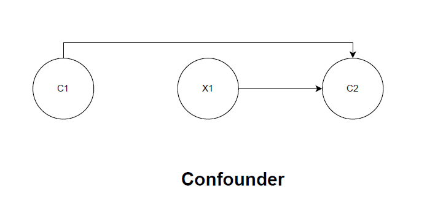
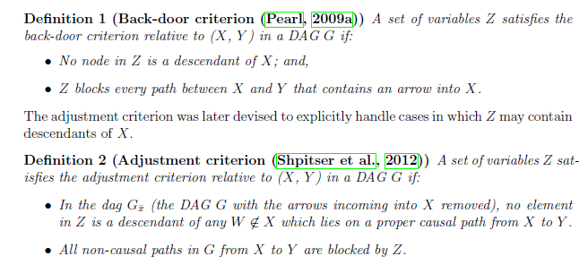

Before diving into the coin examples, Figure 3.1 illustrates the simplest and most important DAG pattern in applied work: a confounder \(X\) that causes both the treatment \(D\) and the outcome \(Y\).
Code
library(ggdag)
Warning: package 'ggdag' was built under R version 4.4.3
Attaching package: 'ggdag'
The following object is masked from 'package:stats':
filter
Code
library(ggplot2)
Warning: package 'ggplot2' was built under R version 4.4.3
Code
theme_set(theme_dag())dag <-dagify(Y ~ D + X, D ~ X,exposure ="D",outcome ="Y")ggdag(dag) +theme_dag()

Figure 3.1: A simple confounder DAG
3.1.1 Three variables relationship
Magic coins toy example

The question of interest is the effect of C1 on C2.
3.1.1.1 Chain coins
Consider the following conditional table

Consider the following - Marginal probability: \[ P(C_2 = 1 ) = P(C_2 = 1|X=S)*P(X=S)+P(C_2 = 1|X=R)*P(X=R) = 0.6\] Probability conditional on X: \[ P(C_2 = 1|X) = \begin{cases}0.8 & \text { if } X = S \\ 0.4& \text { if } X = R\end{cases} \]
Probability conditional on X and C1: \[ P(C_2 = 1|X,C_1) = \begin{cases}0.8 & \text { if } X = S, C_1 = 1\\ 0 & \text { if } X = R, C_1 = 1
\\ 0.4& \text { if } X = R,C_1 = 0 \\ 0 & \text { if } X = S, C_1 = 0\end{cases} \]
Then we can conclude that \(P(C_2 |X,C_1) = P(C_2 =|X)\). That is, \(C_2\) and \(C_1\) are conditionally independent given \(X\) (\(C_1 {\perp\kern-5pt\perp} C_2 | X\)).
3.1.1.2 Confounder coins
Consider the following conditional table

Consider the following - Marginal probability: \[ P(C_2 = 1 ) = P(C_2 = 1|X=S)*P(X=S)+P(C_2 = 1|X=R)*P(X=R) = 0.6\]
Probability conditional on X: \[ P(C_2 = 1|X) = \begin{cases}0.8 & \text { if } X = S \\ 0.4& \text { if } X = R\end{cases} \]
Probability conditional on X and C1: \[ P(C_2 = 1|X,C_1) = \begin{cases}0.8 & \text { if } X = S, C_1 = 1\\ 0.8 & \text { if } X = S, C_1 = 0\\ 0.4 & \text { if } X = R, C_1 = 1
\\ 0.4& \text { if } X = R,C_1 = 0 \end{cases} \]
Again, we can conclude that \(P(C_2 |X,C_1) = P(C_2|X)\). That is, \(C_2\) and \(C_1\) are conditionally independent given \(X\) (\(C_1 {\perp\kern-5pt\perp} C_2 | X\)).
You might think that since C1 and C2 are only caused by X, we can have \(C_1 {\perp\kern-5pt\perp} C_2\) without conditional Hence, let’s check Probability conditional on C1:
\[ P(C_2 = 1|C_1) = \begin{cases}0.55 & \text { if } C_1 = 1 \\ 0.63& \text { if } C_1 = 0\end{cases}, \] which is different from \(P(C_2 = 1)\). Hence we don’t have unconditional independence.
We can also make a general conclusion here:
Warning
Two variables caused by the same variable (confounder) are not independent.
3.1.1.3 Collider coins

Marginal probability: \[ P(C_2 = 1 ) = 0.5\] Probability conditional on C1: \[ P(C_2 = 1|C_1) = 0.5 \] To see this, you can write:
Hence, we have \(C_1 {\perp\kern-5pt\perp} C_2\) without conditional on \(X\).
In fact, if we consider the probability conditional on X and C1
\[P(C_2 = 1|C_1,X) = \begin{cases}1 & \text { if } X = S, C_1 = 1\\ 0 & \text { if } X = R, C_1 = 1
\\ 1& \text { if } X = R,C_1 = 0 \\ 0 & \text { if } X = S, C_1 = 0\end{cases} \]
We find that \(P(C_2 = 1|C_1,X) \neq P(C_2 = 1|C_1)\). That is, \(C2 \not\!\perp\!\!\!\perp C1 |X\).
We can make another general conclusion here:
Warning
If two variables are causing the same variable (collider), the two variables are independent without conditioning on the collider and they are NOT independent when conditioning on the collider.
3.1.2 More complicated examples
We now consider some examples that are more complicated.
If we also have the direct effect from C1 to C2.

If we have more than one intermediate variables.

3.1.3 Summary
The relationship between two variables is blocked by
conditional on (one of) the intermediate variable(s) in a chain
conditional on (one of) the confounder(s)
No conditional on the collider or its descendant
Also, controlling for a descendant of a variable is equivalent to partially controlling for that variable.
3.2 Causal Inference
Now we have some ideas whether some variables needs to be controlled if we know the causal relationship between variables.
Then we shift our attentions to causal inference, mainly the effect of the treatment variable on outcome variable.
3.2.1 Interventions and do calculus
To infer the causal effect, we need to introduce the concept of intervention. Consider the coin example with confounder.

Once we know the analytical relationship, we can calculate \(P(C_2|C_1)\). However, this conditional probability gives us the distribution of \(C_2\) when observing\(C_1\). What we are interested in is \(P(C_2)\) when we forcing the first coin to turn from \(C_1= 0\) to \(C_1= 1\).
We define this forcing behavior by \(do(C_1 = 0)\). Hence the casual effect of \(C_1\) on \(C_2\) can be written as
To do this, we need to revise the DAG by interventions - remove all the links towards \(C_1\)

In this new model, we will have \[ P_{n}(C_2|C_1) = P_{n}(C_2|do(C_1)) = P(C_2|do(C_1)).\] i.e., observing the conditional distribution is equivalent to forcing the change in the new model.
However, how can we identify \(P_{n}(C_2|C_1)\) from the distribution information in old DAG? we can use following two identification strategies.
3.2.2 Backdoor criterion
We are interested in \(P(Y|do(X))\) - the casual paths are paths from \(X\to \cdots \to Y\). All non-casual paths are “spurious” paths we would like to control. Particularly, backdoor paths are those \(X \gets \cdots \to Y\).
Hence, we would like to find a set of variables \(Z\) such that
it blocks all spurious paths from \(X\) to \(Y\).
it does not (partially) block any of the causal paths from X to Y ; and,
it does not (partially) open other spurious paths.
If such set of variables \(Z\) exists, then \(P(Y|do(X),Z) = P(Y|X,Z)\).
I will also include the formal statement here for back-door criterion and adjustment criterion.

3.2.3 front door criterion
An alternative but rare identification strategy is via front door criterion.
In this case, you need to have a set of variables \(Z\) that
intercepts all causal paths from \(X\to \cdots \to Y\).
there is no backdoor path from \(X\) to \(Z\) and
all back-door paths from \(Z\) to \(Y\) are blocked by X.
3.3 Crashcourse examples Cinelli, Forney, and Pearl (2024)
Imbens (2020) raised four main concerns about the DAG framework from the perspective of the potential outcomes tradition:
Manipulation
Instrumental variables and shape restriction
Simultaneity
Unconfoundedness
These concerns sparked a productive debate, but the field has moved considerably toward rapprochement since then. Most notably, Cinelli et al. (2025) is co-authored by Imbens himself alongside leading DAG researchers (Cinelli, Henckel, and others), demonstrating that the two camps have found substantial common ground. That paper identifies a dozen open challenges in causality that both frameworks face, reframing the discussion from “which framework is correct” to “what problems remain unsolved regardless of framework.”
For a systematic comparison of the three main causal inference frameworks — DAGs (Pearl), potential outcomes (Rubin/Neyman), and decision-theoretic approaches (Dawid) — Wang, Richardson, and Robins (2025) provide the most comprehensive current treatment. They show that the frameworks are largely complementary: DAGs excel at encoding qualitative causal assumptions and deriving identification strategies, while potential outcomes provide a precise language for defining causal estimands and connecting them to statistical estimation. The decision-theoretic framework adds a perspective focused on intervention regimes and policy relevance.
For econometricians specifically, Hünermund and Bareinboim (2025) serve as the key bridge paper, demonstrating how graphical causal models can be integrated into the standard econometric toolkit. They show that many familiar econometric concepts — omitted variable bias, instrumental variables, selection on observables — have precise graphical counterparts, and that DAGs can clarify when standard econometric strategies succeed or fail. Their treatment of data fusion (combining multiple datasets under explicit causal assumptions) points to an important frontier where the graphical framework offers tools that the potential outcomes tradition lacks.
Further Reading
Hünermund and Bareinboim (2025) bridge the graphical and econometric traditions
Cinelli, Forney, and Pearl (2024) provide the definitive guide to good and bad controls
For causal discovery (learning DAGs from data), see Huber (2024)
Cinelli, Carlos, Avi Feller, Guido Imbens, Edward Kennedy, Sara Magliacane, and Jose Zubizarreta. 2025. “Challenges in Statistics: A Dozen Challenges in Causality and Causal Inference.”
Cinelli, Carlos, Andrew Forney, and Judea Pearl. 2024. “A Crash Course in Good and Bad Controls.”Sociological Methods & Research 53 (3): 1071–1104.
Huber, Martin. 2024. “An Introduction to Causal Discovery.”Swiss Journal of Economics and Statistics 160 (1): 1–16.
Hünermund, Paul, and Elias Bareinboim. 2025. “Causal Inference and Data Fusion in Econometrics.”The Econometrics Journal 28 (1): 41–82.
Imbens, Guido W. 2020. “Potential Outcome and Directed Acyclic Graph Approaches to Causality: Relevance for Empirical Practice in Economics.”Journal of Economic Literature 58 (4): 1129–79.
Wang, Linbo, Thomas S Richardson, and James M Robins. 2025. “Causal Inference: A Tale of Three Frameworks.”
Source Code
# DAG {#sec-dag}## PreliminariesBefore diving into the coin examples, @fig-confounder-dag illustrates the simplest and most important DAG pattern in applied work: a confounder $X$ that causes both the treatment $D$ and the outcome $Y$.```{r}#| label: fig-confounder-dag#| fig-cap: "A simple confounder DAG"#| code-fold: truelibrary(ggdag)library(ggplot2)theme_set(theme_dag())dag <-dagify(Y ~ D + X, D ~ X,exposure ="D",outcome ="Y")ggdag(dag) +theme_dag()```### Three variables relationshipMagic coins toy example```{r echo=FALSE}knitr::include_graphics('fig/ch4_DAG/coin_examples.png')```The question of interest is the effect of C1 on C2. #### Chain coins Consider the following conditional table ```{r echo=FALSE}knitr::include_graphics('fig/ch4_DAG/chain_table.png')```Consider the following -Marginal probability:$$ P(C_2 = 1 ) = P(C_2 = 1|X=S)*P(X=S)+P(C_2 = 1|X=R)*P(X=R) = 0.6$$Probability conditional on X:$$ P(C_2 = 1|X) = \begin{cases}0.8 & \text { if } X = S \\ 0.4& \text { if } X = R\end{cases} $$Probability conditional on X and C1:$$ P(C_2 = 1|X,C_1) = \begin{cases}0.8 & \text { if } X = S, C_1 = 1\\ 0 & \text { if } X = R, C_1 = 1\\ 0.4& \text { if } X = R,C_1 = 0 \\ 0 & \text { if } X = S, C_1 = 0\end{cases} $$Then we can conclude that $P(C_2 |X,C_1) = P(C_2 =|X)$. That is, $C_2$ and $C_1$ are conditionally independent given $X$ ($C_1 {\perp\kern-5pt\perp} C_2 | X$).#### Confounder coins Consider the following conditional table ```{r echo=FALSE}knitr::include_graphics('fig/ch4_DAG/confounder_table.png')```Consider the following -Marginal probability:$$ P(C_2 = 1 ) = P(C_2 = 1|X=S)*P(X=S)+P(C_2 = 1|X=R)*P(X=R) = 0.6$$Probability conditional on X:$$ P(C_2 = 1|X) = \begin{cases}0.8 & \text { if } X = S \\ 0.4& \text { if } X = R\end{cases} $$Probability conditional on X and C1:$$ P(C_2 = 1|X,C_1) = \begin{cases}0.8 & \text { if } X = S, C_1 = 1\\ 0.8 & \text { if } X = S, C_1 = 0\\ 0.4 & \text { if } X = R, C_1 = 1\\ 0.4& \text { if } X = R,C_1 = 0 \end{cases} $$Again, we can conclude that $P(C_2 |X,C_1) = P(C_2|X)$. That is, $C_2$ and $C_1$ are conditionally independent given $X$ ($C_1 {\perp\kern-5pt\perp} C_2 | X$).You might think that since C1 and C2 are only caused by X, we can have $C_1 {\perp\kern-5pt\perp} C_2$ without conditionalHence, let's check Probability conditional on C1:$$ P(C_2 = 1|C_1) = \begin{cases}0.55 & \text { if } C_1 = 1 \\ 0.63& \text { if } C_1 = 0\end{cases}, $$which is different from $P(C_2 = 1)$. Hence we don't have unconditional independence. We can also make a general conclusion here:::: {.callout-warning}Two variables caused by the same variable (confounder) are not independent.:::#### Collider coins```{r echo=FALSE}knitr::include_graphics('fig/ch4_DAG/collider_table.png')```Marginal probability:$$ P(C_2 = 1 ) = 0.5$$Probability conditional on C1:$$ P(C_2 = 1|C_1) = 0.5 $$To see this, you can write: $$ P(C_2 = 1|C_1) = P(C_2 = 1|C_1 = 1,X=R) + P(C_2 = 1|C_1 = 1,X=S)\\+ P(C_2 = 1|C_1 = 0,X=R) + P(C_2 = 1|C_1 = 0,X=S)$$Hence, we have $C_1 {\perp\kern-5pt\perp} C_2$ without conditional on $X$. In fact, if we consider the probability conditional on X and C1$$P(C_2 = 1|C_1,X) = \begin{cases}1 & \text { if } X = S, C_1 = 1\\ 0 & \text { if } X = R, C_1 = 1\\ 1& \text { if } X = R,C_1 = 0 \\ 0 & \text { if } X = S, C_1 = 0\end{cases} $$We find that $P(C_2 = 1|C_1,X) \neq P(C_2 = 1|C_1)$. That is, $C2 \not\!\perp\!\!\!\perp C1 |X$. We can make another general conclusion here:::: {.callout-warning}If two variables are causing the same variable (collider), the two variables are independent without conditioning on the collider and they are **NOT** independent when conditioning on the collider.:::### More complicated examples We now consider some examples that are more complicated.If we also have the direct effect from C1 to C2. ```{r echo=FALSE}knitr::include_graphics('fig/ch4_DAG/direct_effect_coins.png')```If we have more than one intermediate variables. ```{r echo=FALSE}knitr::include_graphics('fig/ch4_DAG/multiple_var.png')```### SummaryThe relationship between two variables is **blocked** by1. conditional on (one of) the intermediate variable(s) in a chain 2. conditional on (one of) the confounder(s) 3. No conditional on the collider or its descendantAlso, controlling for a descendant of a variable is equivalent to *partially* controlling for that variable.## Causal InferenceNow we have some ideas whether some variables needs to be controlled if we know the causal relationship between variables. Then we shift our attentions to causal inference, mainly the effect of the treatment variable on outcome variable.### Interventions and do calculus To infer the causal effect, we need to introduce the concept of intervention.Consider the coin example with confounder. ```{r echo=FALSE}knitr::include_graphics('fig/ch4_DAG/do_confounder.png')```Once we know the analytical relationship, we can calculate $P(C_2|C_1)$.However, this conditional probability gives us the distribution of $C_2$ when *observing* $C_1$. What we are interested in is $P(C_2)$ when we *forcing* the first coin to turn from $C_1= 0$ to $C_1= 1$. We define this *forcing* behavior by $do(C_1 = 0)$. Hence the casual effect of $C_1$ on $C_2$ can be written as $$ACE(C_1) = E[C_2|do(C_1 = 1)] - E[C_2|do(C_1 = 0)] $$To do this, we need to revise the DAG by interventions - remove all the links towards $C_1$```{r echo=FALSE}knitr::include_graphics('fig/ch4_DAG/do_manipulate.png')```In this new model, we will have $$ P_{n}(C_2|C_1) = P_{n}(C_2|do(C_1)) = P(C_2|do(C_1)).$$ i.e., observing the conditional distribution is equivalent to forcing the change in the new model. However, how can we identify $P_{n}(C_2|C_1)$ from the distribution information in old DAG? we can use following two identification strategies.### Backdoor criterion We are interested in $P(Y|do(X))$ - the casual paths are paths from $X\to \cdots \to Y$. All non-casual paths are "spurious" paths we would like to control. Particularly, backdoor paths are those $X \gets \cdots \to Y$. Hence, we would like to find a set of variables $Z$ such that 1. it blocks all spurious paths from $X$ to $Y$.2. it does not (partially) block any of the causal paths from X to Y ; and,3. it does not (partially) open other spurious paths.If such set of variables $Z$ exists, then $P(Y|do(X),Z) = P(Y|X,Z)$.I will also include the formal statement here for back-door criterion and adjustment criterion. ```{r echo=FALSE}knitr::include_graphics('fig/ch4_DAG/definition.png')```### front door criterion An alternative but rare identification strategy is via front door criterion.In this case, you need to have a set of variables $Z$ that 1. intercepts all causal paths from $X\to \cdots \to Y$. 2. there is no backdoor path from $X$ to $Z$ and 3. all back-door paths from $Z$ to $Y$ are blocked by X. ## Crashcourse examples @cinelli2024crash### Example 1-6 ```{r echo=FALSE}knitr::include_graphics('fig/ch4_DAG/Crashcourse/m1_m3.png')``````{r echo=FALSE}knitr::include_graphics('fig/ch4_DAG/Crashcourse/m4_m6.png')```### M-bias ```{r echo=FALSE}knitr::include_graphics('fig/ch4_DAG/Crashcourse/m7.png')```### sometimes it's not about backdoor ```{r echo=FALSE}knitr::include_graphics('fig/ch4_DAG/Crashcourse/m8_m9.png')```### other bad controls ```{r echo=FALSE}knitr::include_graphics('fig/ch4_DAG/Crashcourse/m10_m12.png')```### Collider and selection bias ```{r echo=FALSE}knitr::include_graphics('fig/ch4_DAG/Crashcourse/m15_m17.png')```## DAG versus Potential Outcome @imbens2020potential@imbens2020potential raised four main concerns about the DAG framework from the perspective of the potential outcomes tradition:1. Manipulation2. Instrumental variables and shape restriction3. Simultaneity4. UnconfoundednessThese concerns sparked a productive debate, but the field has moved considerably toward rapprochement since then. Most notably, @cinelli2025dozen is co-authored by Imbens himself alongside leading DAG researchers (Cinelli, Henckel, and others), demonstrating that the two camps have found substantial common ground. That paper identifies a dozen open challenges in causality that *both* frameworks face, reframing the discussion from "which framework is correct" to "what problems remain unsolved regardless of framework."For a systematic comparison of the three main causal inference frameworks --- DAGs (Pearl), potential outcomes (Rubin/Neyman), and decision-theoretic approaches (Dawid) --- @wang2025three provide the most comprehensive current treatment. They show that the frameworks are largely complementary: DAGs excel at encoding qualitative causal assumptions and deriving identification strategies, while potential outcomes provide a precise language for defining causal estimands and connecting them to statistical estimation. The decision-theoretic framework adds a perspective focused on intervention regimes and policy relevance.For econometricians specifically, @hunermund2025causal serve as the key bridge paper, demonstrating how graphical causal models can be integrated into the standard econometric toolkit. They show that many familiar econometric concepts --- omitted variable bias, instrumental variables, selection on observables --- have precise graphical counterparts, and that DAGs can clarify when standard econometric strategies succeed or fail. Their treatment of data fusion (combining multiple datasets under explicit causal assumptions) points to an important frontier where the graphical framework offers tools that the potential outcomes tradition lacks.::: {.callout-tip}## Further Reading- @hunermund2025causal bridge the graphical and econometric traditions- @cinelli2024crash provide the definitive guide to good and bad controls- For causal discovery (learning DAGs from data), see @huber2024introduction:::